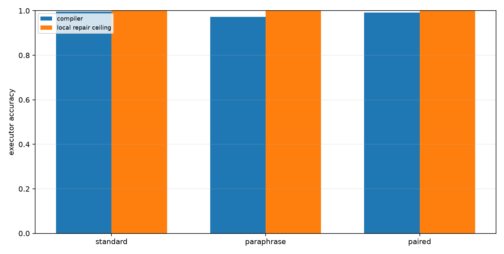
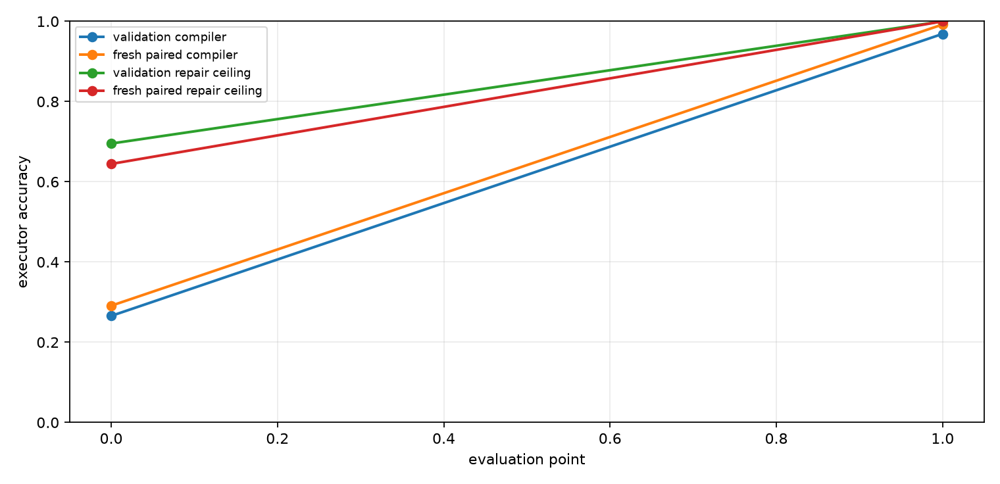
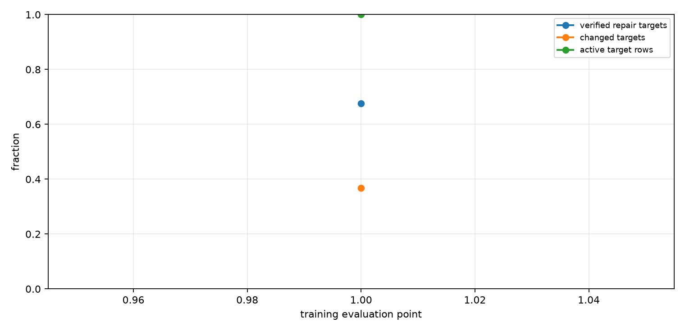
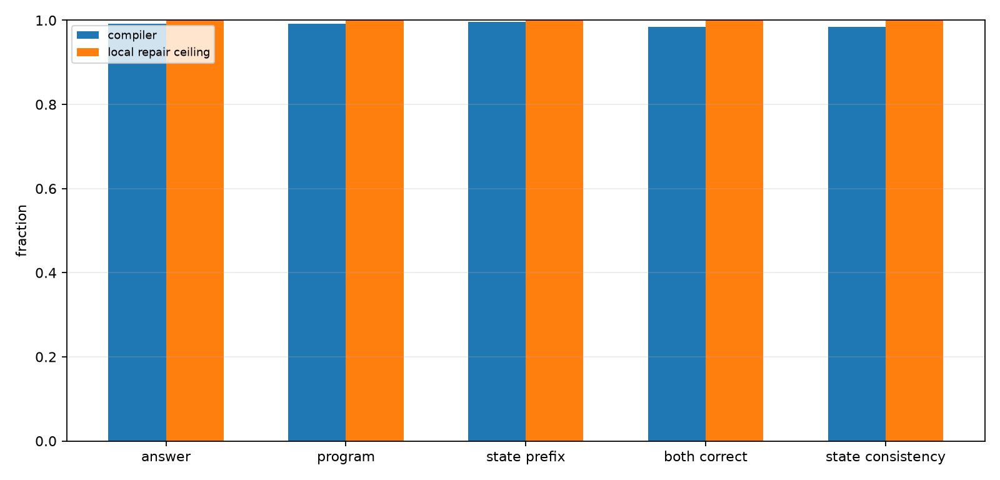
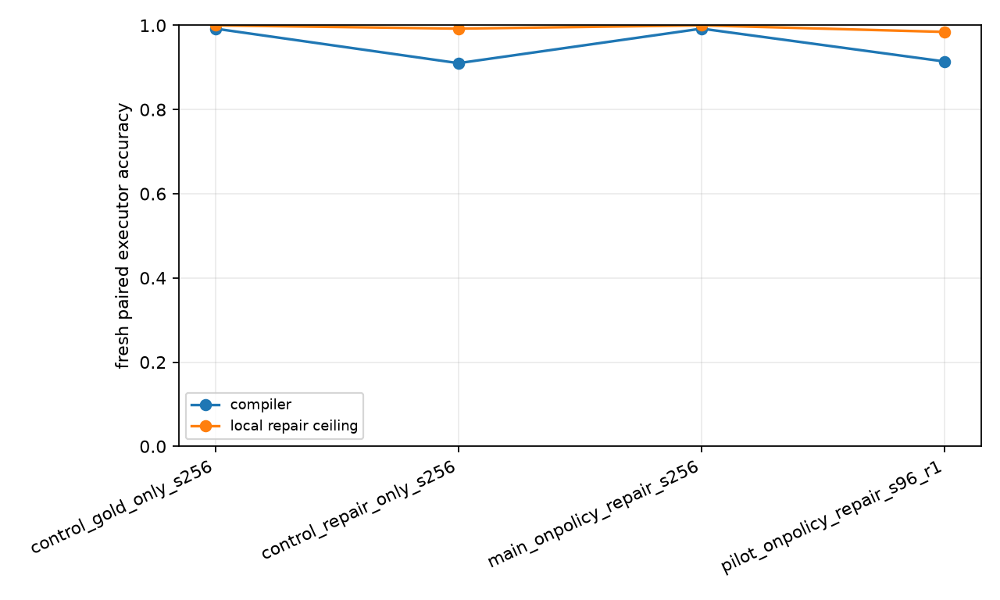

Qwen On-Policy Repair-to-Compiler Training
Abstract
This experiment tests whether verified local program repairs can be converted into a better Qwen-attached compiler policy. A QLoRA compiler emits an executable modular-arithmetic program from each prompt. The training loop runs the current compiler on its own prompts, enumerates nearby program edits, keeps targets that pass an exact execution verifier, and fine-tunes the same compiler toward those repaired targets.
Setup
- Primary run: `main_onpolicy_repair_s256`
- Qwen substrate: `Qwen/Qwen3-4B`
- Modulus: `97`
- Max program length: `24`
- Train examples: `256`
- On-policy rounds: `1`
- Epochs per round: `1`
- Target mode: `repair_or_gold`
- Repair budget: top-k `3`, max edits `2`
The local repair column is a ceiling measured with target-aware verification during analysis and target construction. It is not a deployable inference path. The deployable model is the compiler row after fine-tuning.
Results
Final Splits
| Split | Compiler | Local repair ceiling | Program exact | State prefix | Repair found |
|---|---|---|---|---|---|
| val_len24 | 96.9% | 100.0% | 96.9% | 98.9% | 100.0% |
| fresh_standard_len24 | 99.6% | 100.0% | 99.6% | 99.6% | 100.0% |
| fresh_paraphrase_len24 | 97.3% | 100.0% | 97.3% | 98.2% | 100.0% |
| fresh_paired_len24 | 99.2% | 100.0% | 99.2% | 99.6% | 100.0% |

Baseline To Final
| Split | Baseline compiler | Final compiler | Baseline repair ceiling | Final repair ceiling |
|---|---|---|---|---|
| val_len24 | 26.6% | 96.9% | 69.5% | 100.0% |
| fresh_standard_len24 | 28.5% | 99.6% | 67.2% | 100.0% |
| fresh_paraphrase_len24 | 28.9% | 97.3% | 66.8% | 100.0% |
| fresh_paired_len24 | 29.1% | 99.2% | 64.5% | 100.0% |

On-Policy Target Quality
| Round | Epoch | Verified repair targets | Changed targets | Active rows | Avg candidates | Avg verified |
|---|---|---|---|---|---|---|
| 1 | 1 | 67.6% | 36.7% | 100.0% | 307.00 | 1.02 |

Fresh Paired Details
| Metric | Compiler | Local repair ceiling |
|---|---|---|
| Executor accuracy | 99.2% | 100.0% |
| Program exact | 99.2% | 100.0% |
| State prefix fraction | 99.6% | 100.0% |
| Pair both-correct | 98.4% | 100.0% |
| Pair state consistency | 98.4% | 100.0% |

Run Summary
| Run | Fresh paired compiler | Fresh paired repair ceiling | Repair found | Program exact |
|---|---|---|---|---|
| control_gold_only_s256 | 99.2% | 100.0% | 100.0% | 99.2% |
| control_repair_only_s256 | 91.0% | 99.2% | 99.2% | 91.0% |
| main_onpolicy_repair_s256 | 99.2% | 100.0% | 100.0% | 99.2% |
| pilot_onpolicy_repair_s96_r1 | 91.4% | 98.4% | 98.4% | 90.6% |

Interpretation
On the fresh paired split, the compiler moves from 29.1% at the initial evaluation point to 99.2% after on-policy repair training. The measured local repair ceiling at the end is 100.0%, so the compiler recovers 98.9% of the initial compiler-to-repair gap.
Attribution is sharper with controls. The gold-only control reaches 99.2% fresh paired accuracy, matching the mixed repair-or-gold run. The repair-only control, with gold auxiliary losses disabled and unverified rows skipped, still reaches 91.0%. So the headline gain is a real compiler-policy improvement, but it is not uniquely caused by repaired targets; dense gold trace supervision is sufficient under this budget, while verified local repairs alone provide a strong but weaker training signal.
The key result is therefore narrower and more useful: a small amount of trace-level posttraining can turn a weak executable-program compiler into a near-ceiling compiler on fresh prompts, and target-aware local repairs provide a deployable training signal even when gold fallback is removed.
Limitations
- The task is synthetic modular arithmetic.
- Target construction uses exact execution verification.
- The compiler head and deterministic runtime are specialized to copied numeric programs.
- The local repair ceiling is target-aware and should be read only as headroom.
- The primary result is one run unless more runs are added to the directory.
Artifacts
Small experiment files live in:
experiments/qwen_onpolicy_repair_compiler/Large artifacts live in:
large_artifacts/qwen_onpolicy_repair_compiler/checkpoints/Primary files:
- `analysis/summary.md`
- `analysis/final_metrics.csv`
- `analysis/all_final_metrics.csv`
- `analysis/figures/executor_accuracy.png`
- `analysis/figures/paired_details.png`
- `analysis/figures/training_curve.png`
- `analysis/figures/target_quality.png`
- `analysis/figures/iteration_summary.png`
- `runs/main_onpolicy_repair_s256/metrics.csv`
- `runs/main_onpolicy_repair_s256/train_log.csv`
- `reports/qwen_onpolicy_repair_compiler_paper.md`
- `reports/qwen_onpolicy_repair_compiler_paper.html`
- `checkpoint_manifest.csv`